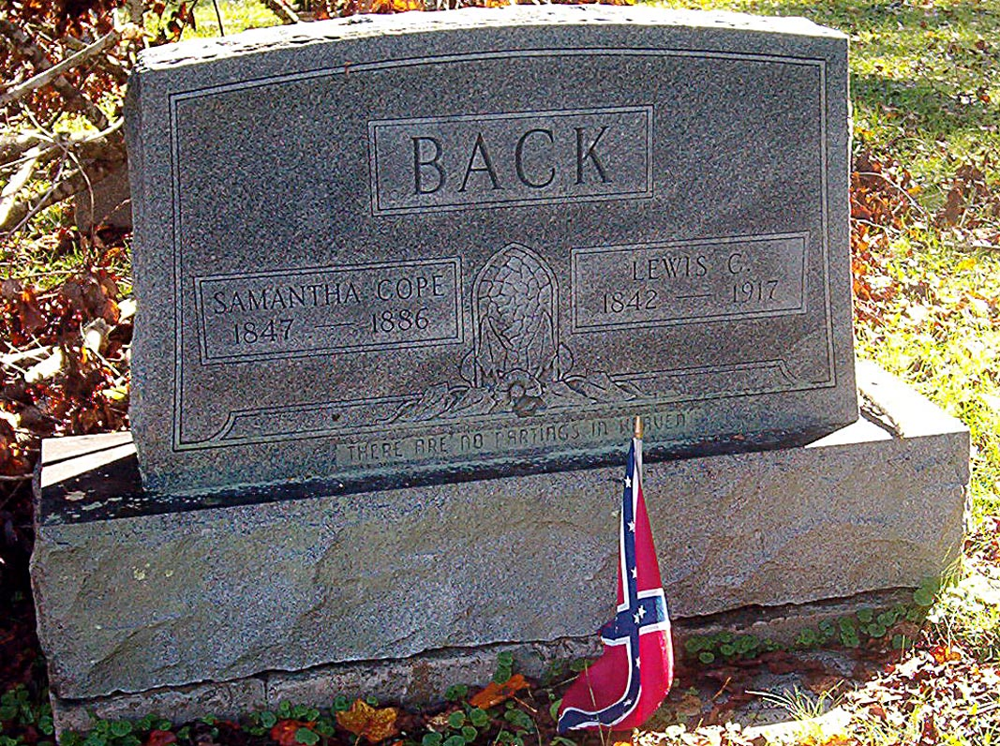
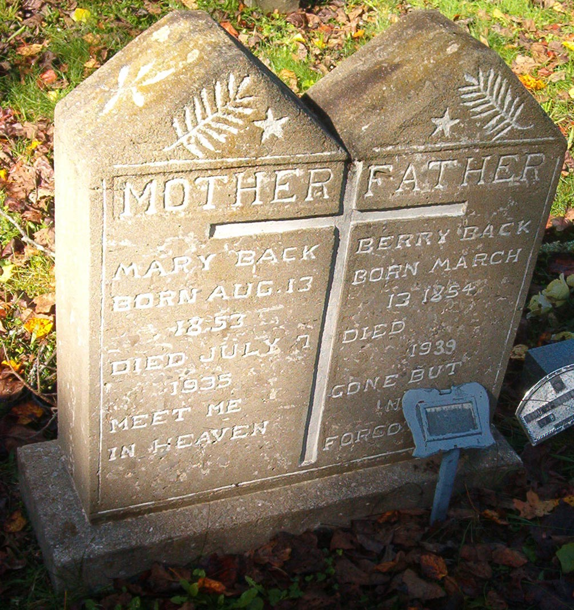

Mary J. Bach
Nov. 7, 1857
May 25, 1923
Nov. 7, 1857
May 25, 1923
Hiram D. Bach
Feb. 5, 1860
Apr. 15, 1950
Feb. 5, 1860
Apr. 15, 1950
BACH
Edgar Bach
Son of Hiram D.
and Mary J. Bach
Oct. 18, 1884
Oct. 12, 1886
Son of Hiram D.
and Mary J. Bach
Oct. 18, 1884
Oct. 12, 1886

Back
Samantha Cope
1847 - 1886
1847 - 1886
Lewis C.
1842 - 1917
1842 - 1917
THERE ARE NO PARTINGS IN HEAVEN

MOTHER
Mary Back
Born Aug. 13
1853
Died July 7
1935
MEET ME
IN HEAVEN
Mary Back
Born Aug. 13
1853
Died July 7
1935
MEET ME
IN HEAVEN
FATHER
Berry Back
Born March
13 1854
Died
1939
GONE BUT
NOT
FORGOTTEN
Berry Back
Born March
13 1854
Died
1939
GONE BUT
NOT
FORGOTTEN
Children of James and Martha Hagins Bach
1.
Ellen Bach Byrd
1862 - 1893
1862 - 1893
Infant of
Joseph & Ellen
Bach Byrd
Joseph & Ellen
Bach Byrd
2.
Bach
Lazarus P.
1864 - 1920
1864 - 1920
Elizabeth W.
1880 - 1919
1880 - 1919
3.
BACH
Calvin
1866-1943
1866-1943
Jane M.
1884-1976
1884-1976
4. 
IN MEMORY OF
Horatio Seymore Bach
Jan. 26. 1868 - May 24, 1873
Horatio Seymore Bach
Jan. 26. 1868 - May 24, 1873
5.
Lillie Florence Bach
1873 - 1886
1873 - 1886
6.
James Daniel Bach
1875 - 1881
Drowned
1875 - 1881
Drowned
7.
Dayton Bach
1878 - 1892
1878 - 1892
Back
Isebella
May 31, 1879
Aug 10(?) 1923
May 31, 1879
Aug 10(?) 1923
Floyd
Aug 16, 1874
Apr 26, 1948
Aug 16, 1874
Apr 26, 1948
Barney Back
born
Jan. 28, 1833
Died
Oct. 29, 1903
We have lost our dear father
He has bid is all adieu
He has gone to live in heaven
and his person(?) is lost to view
born
Jan. 28, 1833
Died
Oct. 29, 1903
We have lost our dear father
He has bid is all adieu
He has gone to live in heaven
and his person(?) is lost to view
Thy will be done
Solomon Back
Aug. 22, 1847
Feb. 27, 1924
His words were kindness
His deeds were love
His spirit humble. He
rests above.
Solomon Back
Aug. 22, 1847
Feb. 27, 1924
His words were kindness
His deeds were love
His spirit humble. He
rests above.